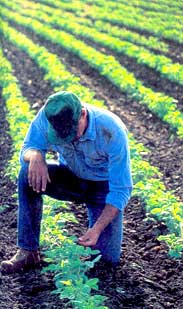
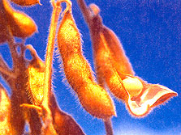
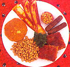
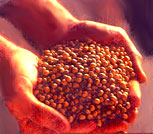
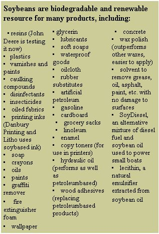

The Most Important Food In The World
June/July 2000
Planting, harvesting and
harnessing soy.
by Biz Fairchild Reynolds
At first glimpse, it appears to be such a boring little lean, hard and flat and round. Even the short, nondescript name "soy" belies the incredibly amazing properties hidden within this unassuming yet extremely versatile legume. In fact, the Chinese, who historically were the first to use the soy bean for food, have for centuries called it "Yellow Jewel," "Great Treasure" and "Brings Happiness."
Soybeans have always been a lucrative crop in the U.S. (third in importance, after corn and wheat). We are the world's leading producer of soybean oil and meal, and the leading exporter as well. Almost 40% of our soybean crop is exported.
Here in farm country, most folks think of soybeans as either an easy-to-grow market crop, or as an animal feed. But with a protein content of 40%, soy can also be an important part of a vegetarian diet if eaten along with grains and nuts.
Historians think soybeans may have been domesticated as early as the 11th century B.C. in Northwestern China. Introduced in Europe in the 18th century and to America in the early 19th century, the first soybeans to be grown in the U.S. were grown in Pennsylvania - as a garden ornamental. Soon the bean became a common forage crop, used for hay, silage and pasture. But it was not until oil was first commercially extracted from the seed in the early 1900s that the soybean became invaluable - almost overnight. By 1929, a significant part of the soybean crop was being crushed for oil, and processing plants
were quickly established. From a staple food crop in Asia to a multiple-use crop grown worldwide, the soybean's future continues to expand as a remarkable range of new and improved products are formulated with the humble soybean as the main ingredient.
First Plantings
The soybean (Glycine max) is an annual legume and a member of the pea family. Unlike its wild ancestor, which was a viney and rather floppy plant, the modern soybean has been bred to stand erect; in a good year some varieties reach a height of up to six feet. (Our farm beans are usually waist high). Soybeans grow from a branched taproot that exists in the top four to eight inches of soil. Its self-pollinated flowers are small, blooming either purple or white.
All soybean varieties are palatable, but the special "edible" varieties are less oily and better for human consumption. Popular edible varieties include Kanrich, Frostbeater, Pickett, Prize, Kim, Disoy, Bansei, Fuji, Verde, Seminole and Green Giant, all of which make good green crops and produce many pods.
Few Americans consider soybeans when planning their gardens. Still, they are gaining in popularity. Hundreds of soybean varieties have been developed over the years, exhibiting numerous plant characteristics and seed colors, including the most common buff-colored type. The University of Illinois has a collection of over 7,000 different beans, showing the enormous genetic variation occurring within the same species - red, green, mottled, speckled, round, oval, lentil-like, striped, and so forth.
Get the Best Seed
We buy our farm seed from a certified seedsman. If you want to know the exact variety and history of your seed, including whether it was organically grown, if it has been treated or if it is a genetically modified (GM) bean, you should seek out a reputable seed dealer. (For more on GM crops, see "Brave New Food" in the last issue of MOTHER.) If you are not choosy, you may find a farmer willing to sell you a bucket of beans from the combine hopper (which is how we get our eating beans). These need only be stored in a dry place until the following spring. (If you'll be us ing them as food right away, wash well just before cooking, being careful to pick out any cockleburs, black beans or grasshopper parts!) Expect to pay about $5 per bushel at an elevator; cleaned seed from a dealer is about $16 per bushel. Either way, that's cheap eating, as one bushel of beans weighs about 60 pounds. Finding mail-order edible soybean seed for home planting is a bit difficult, but Seeds of Change, located in Santa Fe, New Mexico, and available at (888) 762-7333 or http://store.yahoo.com/seedsofchange , offers these two varieties:
Also, Thompson & Morgan, another interesting mail-order seed seller from Europe ( www.thompson-morgan.com ), includes the following in its offerings:
GROWING AND HARVESTING
Temperature
To grow soybeans, which will succeed in almost any climate, wait until the soil has warmed in the spring ...usually a week after optimum corn-planting time in your area, when soil has reached a minimum temperature of 60°F (that means May or June in most of the U.S.). Minimum temperature for seed germination is 43°F, and minimum temperature for actual crop growth is 50°F. Optimum temperatures, however, are from 68°F to 77°F Beans can be planted through June and even into July, but the earlier you plant, the better crop you will harvest. (A lack of moisture later in the summer can greatly affect bean formation.)
Soil
Soybeans prefer a loamy soil, but will also tolerate poor drainage. They will grow in all types of soils, but a pH range from 5.5 to 6.5 (slightly acidic) is considered optimal. Phosphorus, potassium and nitrogen are major nutrients required for good plant growth.
Spacing
Plant the seeds 1 1/2" deep, unless you are planting them late. (In that case, since the ground will be much drier, push them to twice that depth.) Garden books suggest that you plant eight seeds per foot of garden row. This may sound a bit close, as the soybean plants are quite large; but this close spacing allows the floppy plants to hold each other up, and the beans will produce excellently.
Fertilizer
Fertilizing soybeans is not a common practice, unless the soil is known to be deficient in phosphorus and potassium. (In some ways soybeans actually replenish the soil.) On the farm, our cooperative comes out and spreads phosphate and potash granules over the fields before planting begins. But this is mainly because we reuse the soil repeatedly for the same crop, which slowly depletes the ground of needed nutrients. Sometimes we rotate and plant corn instead.
Nitrogen is important to soybean culture. But soybeans, like other legume crops (peas, alfalfa, clover), have the capacity to "fix" nitrogen in the soil, thanks to certain bacteria contained in the nodules that form their roots. These bacteria convert nitrogen from the air into such compounds as ammonia and nitrate (which green plants need to live and grow), thus reducing soy's need for a nitrogen fertilizer.
But as with any bean, adding innoculants to your soy crop will both allow plants to better fix nitrogen in the soil and improve the yield. Inexpensive i nnoculants may be purchased from seed catalogs and in hardware stores.
Cultivation
If you plant soybeans in rows, they can be better cultivated . Weeds will reduce yields. As soon as possible after planting, begin working between the rows with a tractor or tiller if you've planted a big plot. Hoeing between the plants is also worthwhile, since clean cultivation will ensure more beans. As the beans grow, adjust the tiller shields so that dirt rolls around the base of the plants. Knee-high beans are too tall for further cultivating, since this could seriously damage the plants and the roots.
Most large-scale farmers are forced to use an herbicide. Small-scale growers should be able to hand-check the weeds.
The beans can also be planted broadcast-style, then worked into the ground with a tiller. But this stand will be much weedier, as you will be unable to till it. If, however, the last crop you grew on the same spot was weed-free, weed control may not be such a problem.
Moisture
Keep soybeans watered as you would the rest of your garden. Some moisture is necessary for germination, of course, and during early development. Indeed, it's most important that the plants receive rainfall (or artificial watering) at the time of their seed-filling period. Soybeans are, however, tough little guys that can withstand some drought once they are well established. We have seen them withstand week after week of high temperatures, hot winds and no rainfall, provided they got their early moisture.
Pests
These days there are few pest insects to bother soybeans, although the number of Mexican bean beetles, velvet bean caterpillars and Japanese beetles are on the rise. At current levels, these pests can usually be controlled by natural predators and viral diseases. There are also less serious insects that may occasionally bother soybeans, such as cutworms, grasshoppers and army worms.
As the beans mature, fungal diseases can become quite destructive, making it difficult to save seed. But in general, insects and disease pose a much greater threat to soy crops in tropical environments than in our own temperate climate .

Harvest
The length of the growing season varies from 50 to 200 days, depending on the variety, weather, latitude, etc. For dry harvest, soybeans should be allowed to stand in the field while the pods dry and mature, turning a huff to yellow color. During this time, the leaves will first turn yellow and then drop off. Not to worry, though: a good frost will help to ripen the crop, quicken the leaf fall and short en the waiting time until harvest - and it won't damage the beans.
The fully ripe beans are left to dry in the fields; the old brown stems and pods are left standing until dry, with the moisture content falling to about 13%.
On a good day here on the farm, we c an combine 3,000 bushels of beans from 60 acres; this, despite the late start we get, waiting almost till noon for the moisture to burn off the fields. In the fall, the dust and chaff of thousands of Midwest soybean fields fill the air, as combines run day and night to bring in the harvest before the fall rains. Harvesting a backyard crop of soybeans for home use is a little more labor-intensive. A single soybean plant may form as many as 40 hanging pods, each one containing two or three round seeds (about 1/4" across) and weighing about 120 to 200 milligrams.
If you are growing a small quantity of beans, you can cut and thresh them by hand. Cut the stalks, stuff them in a burlap bag, then trample them, beat them or run them over with your pickup. The resulting tangle can be winnowed by pouring the beans from one bucket to another, either outdoors in a brisk breeze, or in front of a large fan.
Store the cleaned beans in containers in a dry, protected area. Food moths, weevils, rodents, mildew - none of these food-damaging agents seem to care enough to bother the rock-hard shell of the uncooked soybean.
If you want to harvest the beans in the green stage, you can gather, cook and freeze them as you would garden peas. Steam the green, still-tender pods for about ten minutes, pour off the water and remove the hull. This will be a slow process. Some folks simply pull the green shell between their teeth and pop out the green seeds that way. Green soybean harvest may be stretched over several weeks, as the beans at the base of the stalks dry first, then gradually the ones higher up - very much like garden peas.
You may also choose to plow your soybean plants under as a green manure before the seeds have formed far enough to reseed. Or, bundled and hung to dry, the plants make nutritious rabbit or chicken feed. Hay can even be made from soybean stalks cut and dried during August, when the chances of rain are small. Soy hay does, however, take good deal longer to cure than other hays.
Eating
It was raised eating pressure-cooked soybeans and still enjoy them, steaming hot and with a little salt. Whole beans can be used in soups, made into "baked beans" and ingeniously transformed into myriad protein-rich foods. They can be ground coarsely for making roasts or burgers, or used as a meat extender. Soaked briefly, drained and deep-fried or baked, soybeans can be delicious snacks - similar to but infinitely better for you than those sold at the supermarket. Dig in!
Read more GARDENING articles at www.motherearthnews.com
|
 From burgers to bacon to cakes to milk, soy has been transformed into an astonishing variety of foods. |
The authors sons Robbie and Kevin Reynolds (along with friend Ryan Bush) at the family farm, roasting soy hot dogs. |
 |
|
 |
|
 |
 |
|
 |
|
 |
|
|